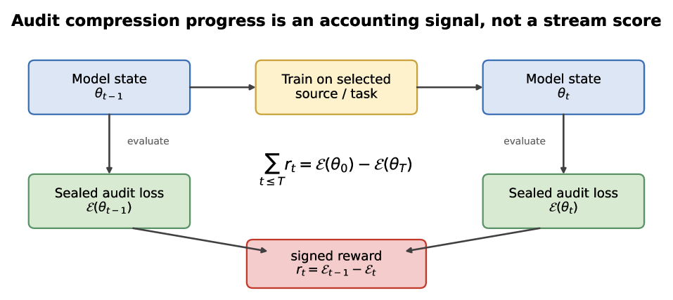
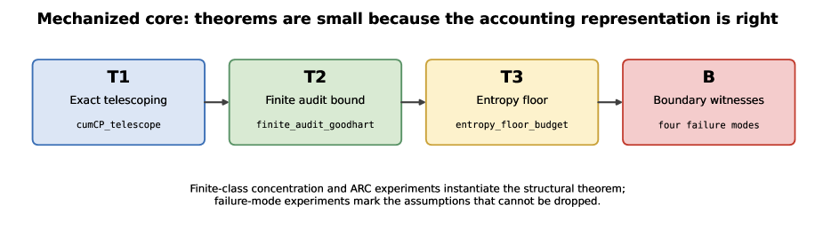
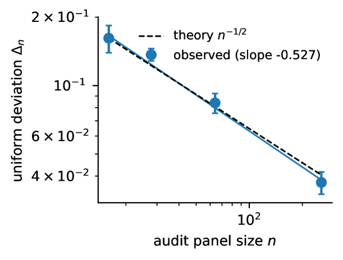
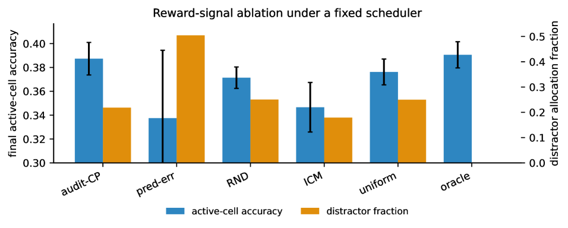

A self-contained Lean 4 / Mathlib development mechanizes the structural core: telescoping, the finite-audit bound, finite Gibbs, and the entropy floor.
Abstract
Compression progress is a long-standing proposal for intrinsic motivation: reward an agent when its world model becomes better at predicting or compressing experience. The folk claim is that this reward is "credible" because it is paid only for learning. We make this precise and prove it. If intrinsic reward is the signed decrease of a fixed sealed-audit loss, r_t = E(theta_{t-1}) - E(theta_t), then cumulative reward telescopes exactly to endpoint audit improvement, so no policy can push reward up indefinitely while true audit performance stagnates or degrades. For finite audit panels the same result holds with a sharp false-positive budget: cumulative empirical reward is at most true audit improvement plus 2 Delta_n(F, delta), the uniform audit deviation of the model class. This is horizon-free: adaptivity over time costs nothing once the sealed panel uniformly controls the class. The theorem also identifies the failure modes: the guarantee disappears if progress is clipped, scored on the agent's own stream, exposed to a high-capacity model on a reusable panel, or applied to a neural class that makes Delta_n vacuous. We give a Lean 4 mechanization of the structural core (telescoping, the finite-audit bound, finite Gibbs, and the entropy floor) and an experiment suite on ARC-TGI grid-transformation generators with adaptive holdout attacks. Experiments confirm the theory: finite-audit deviation scales as n^{-0.527}; signed progress resists clip-farming, stream leakage, and noisy-TV curiosity; naive reusable audits are exploitable by black-box scalar feedback, while standard release defenses keep the attack below the 2 Delta_n threshold. Signed compression progress on a sealed audit is an accounting signal of genuine improvement.
Problem
Compression progress is a long-standing intrinsic motivation proposal for RL agents, but informal claims about its credibility leave open Goodhart failure modes: reward clipping, stream scoring, panel memorization, and overfitting a finite validation set can all allow cumulative reward to grow without genuine learning.
Approach
The authors formalize signed compression progress on a sealed audit as a potential-drop identity: cumulative reward telescopes to endpoint audit-loss improvement, giving zero false-positive budget for exact audits and a 2*Delta_n budget for finite panels. They provide a Lean 4 mechanization of the structural core (telescoping, finite-audit bound, finite Gibbs, entropy floor) and run experiments on ARC-TGI grid-transformation generators with adaptive holdout attacks.

Figure 1: The measurement frame. Training data may be selected adaptively, but reward is computed only from the signed change in a fixed audit loss. This makes intrinsic reward an endpoint accounting identity over the sealed audit.

Figure 7: Proof architecture. Signed audit progress is an endpoint potential drop, which keeps the mechanized theorems short. The finite-class and ARC experiments instantiate the structural result; the boundary experiments mark assumptions that cannot be dropped.
Results
Finite-audit deviation decays as n^{-0.527}, close to the theoretical n^{-1/2}. Signed progress resists clip-farming, stream leakage, and noisy-TV curiosity. Naive reusable audits are exploitable by scalar feedback, but standard release defenses keep the attack below the 2*Delta_n threshold.

Figure 3: Finite-audit concentration: empirical uniform deviation of floored cross-entropy over a finite family decays as \Delta_{n}\propto n^{-0.527} , close to the n^{-1/2} prediction.

Figure 4: Reward-signal ablation with the same scheduler. Final active-cell reconstruction accuracy (left axis) and distractor allocation fraction (right axis) per reward signal, 20 seeds. Audit-CP is the strongest non-oracle reward signal and spends less than half the distractor budget of prediction-error curiosity.